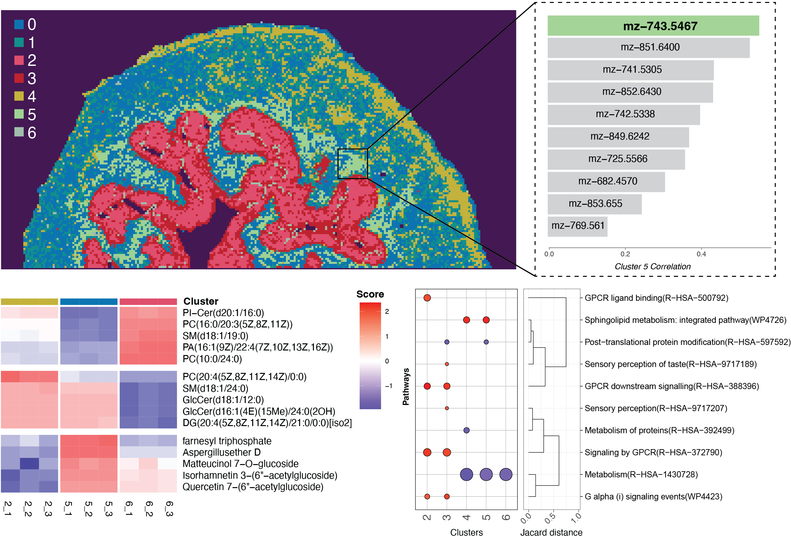
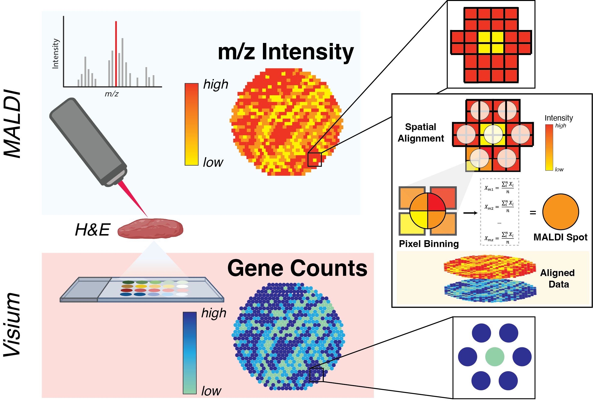
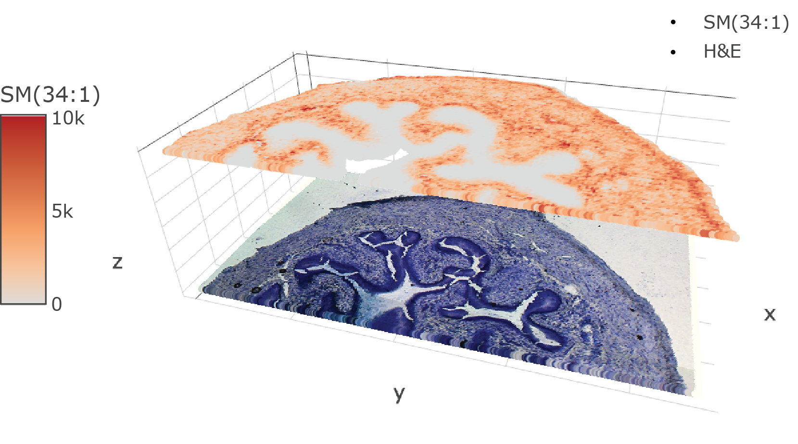

Listed below are a number of useful tutorials demonstrating how to use SpaMTP when analysing your spatial metabolomic datasets. For more documentation of each function used in these tutorials please visit our Reference page.
For a general introduction in importing data, annotating metabolites and running key analysis pipelines on your spatial metabolomic data we suggest starting with the Spatial Metabolomic Analysis Tutorial. This vignette uses mouse bladder data and demonstrates how to perform general tasks such as plotting, subsetting, and manipulating SpaMTP Seurat objects. For those with paired multi-modal datasets we suggest working through the Multi-Modal Integration Tutorial. Here, we provide methods to align your two datasets to the same coordinates, map spatial metabolomic pixels to spatial transcriptomic spots and then run various analysis using this integrated data.
|
 |
 |
 |
| An introduction to analysing spatial metabolomic datasets using SpaMTP. | Align, map and integrate spatial metabolomic and transcriptomics datasets together using SpaMTP. | Examples of additional SpaMTP visualisation and analysis functions that are useful for SM analysis pipelines. |
| GO | GO | GO |
You can install the current version of SpaMTP from GitHub with:
if (!require("devtools", quietly = TRUE))
install.packages("devtools")
devtools::install_github("GenomicsMachineLearning/SpaMTP")Below is an example of how to set up SpaMTP using a conda environment
conda create -n SpaMTP -c conda-forge r-base=4.3.3 r-essentials r-devtools
conda activate SpaMTPWithin the SpaMTP environment open R and install SpaMTP
devtools::install_github("GenomicsMachineLearning/SpaMTP")checking if R was compiled with the RConn patch... no
checking for cairo.h... no
configure: error: Cannot find cairo.h! Please install cairo (http://www.cairographics.org/) and/or set CAIRO_CFLAGS/LIBS correspondingly.
ERROR: configuration failed for package ‘Cairo’check these libraries exist:
conda install conda-forge::r-cairoThis should resolve any issues. Rerun:
BiocManager::install("scater")ERROR: dependency ‘EBImage’ is not available for package ‘Cardinal’
BiocManager::install("EBImage")
fftwtools.c:28:9: fatal error: fftw3.h: No such file or directory
28 | #include<fftw3.h>
| ^~~~~~~~~If EBImage failed to installed it ist most likely due to an issue with the installation of fftwtools
Try:
conda config --add channels conda-forge
conda config --set channel_priority strict
conda install r-fftwtoolsElse try:
conda install bioconda::r-fftwtools
conda install conda-forge::fftwTry in R:
if (!require("BiocManager", quietly = TRUE)) #Check if BiocManager is installed
install.packages("BiocManager")
BiocManager::install("fftwtools")If none of the above methods resolve instiallation issues, install Cardinal directly through conda:
conda install bioconda::bioconductor-cardinal